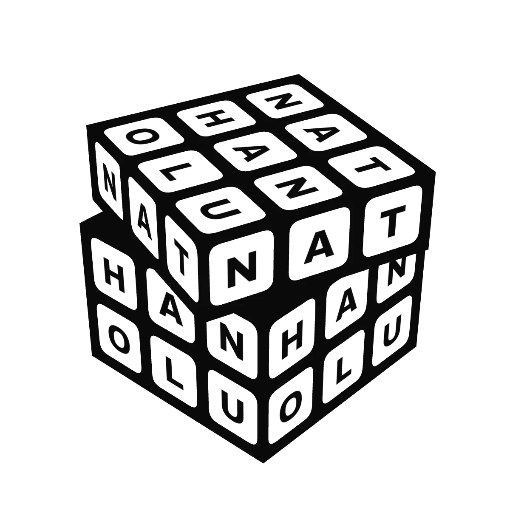
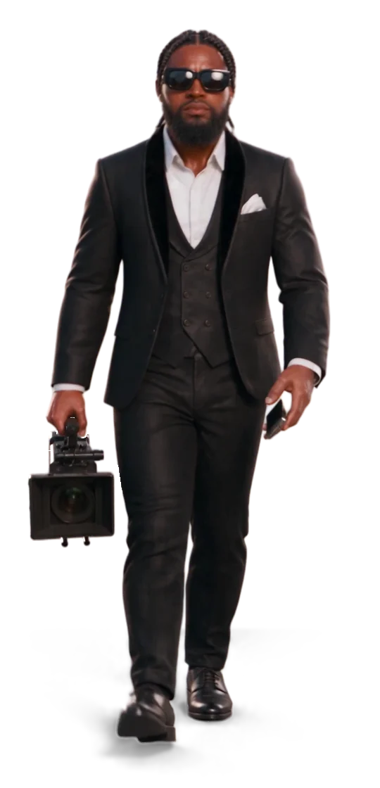
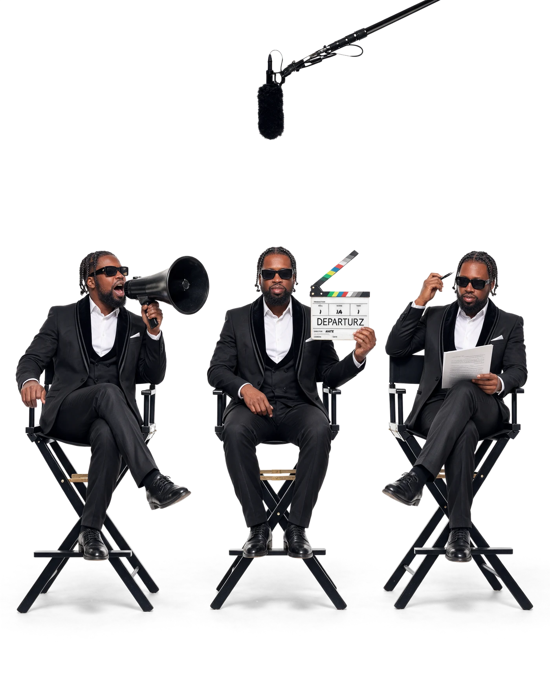
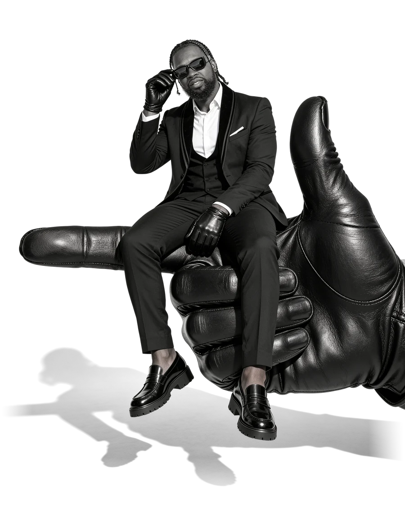
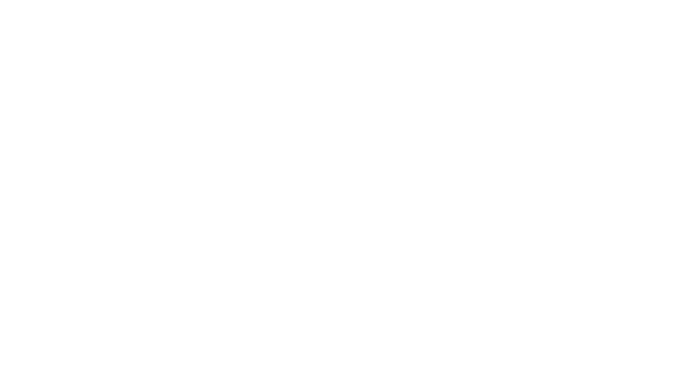

Start here
We tell
stories.
From the first idea to the final file.
DEPARTURZ began with one belief: every project deserves the same level of care, whether it's a major TV production or an independent film. Web design, production, post-production and sound all live under one roof, so your story stays in the same hands the whole way through. We've worked across television, commercials, travel and branded content, from Los Angeles to Houston and wherever the story goes next.
Same care.
Every budget.
Every time.
Then we take off.



Meet the founder
Nathan Olu
Founder · Director · Cinematographer · Drone pilot · DJ
Lights. Camera.
Nate.
Nathan Olu, Nate to most people, is the director behind DEPARTURZ and usually the one holding the camera. He brings a decade of live events and DJing, from House of Blues to KBXX 97.9 The Box in Houston, and he's an FAA-certified drone pilot, so the aerials stay in-house too.
The crew
One call.
A whole crew.
Nate leads every project and brings in trusted industry pros for every role it needs, so you get a full crew with one call and the same standard on every set.
- 01DirectorsStory, vision and the set
- 02EditorsPlus VFX artists and colorists
- 03PhotographersStills, portraits and behind the scenes
- 04Gaffers & GripsLight, rigging and camera support
- 05Web DesignersSites designed and built in-house
- 06Sound EngineersOn set, live and in the mix

What we do
Based in Los Angeles and Houston, with full production crews and dedicated editors for clients anywhere.
